CRM ELIMAZ · M2 · TASK M2-26 (83) · 18/11/2026
Đề xuất cho 9 màn nội bộ của CRM, vẽ bằng đúng hệ thiết kế đã duyệt ở M1 (docs/mockups/m1/m1.css, gốc apps/storefront-giftstatus/DESIGN.md): chỉ màu, cỡ chữ, bo góc có sẵn; không có gì chỉ hiện khi rê chuột; nút trên điện thoại cao ít nhất 44 px; tiền dạng 690.000 ₫. Mỗi màn có nhiều trạng thái xếp dọc (khung viền đứt là ghi chú của mockup).
docs/mockups/m2/soat.mjs (tràn chữ, mục chạm, token, dạng tiền, đủ trạng thái).Tìm khách theo đuôi SĐT, tên, mã; khách mới; "Có thể là cùng một khách"; ô "Số này là của khách"; địa chỉ hai cấp lọc xã/phường; bảng dòng có "có thể bán"; giảm dòng, giảm cấp đơn; mã giảm giá kiểm ngay; phí ship, tổng, COD; nguồn; ghi chú cho hãng; ba nút lưu; phím tắt.
Trạng thái: A soạn đủ (tên 120 ký tự) · B 0 dòng · C 20 dòng · D hết hàng 409 · E chờ duyệt giảm giá · F mã hết lượt + bảng 10 lý do · G mất mạng, gửi lại cùng khóa · H cảnh báo đơn trùng. Ca kiểm: DH01, DH02, DH04, DH09, DH12, DH13, DH16, KM01.
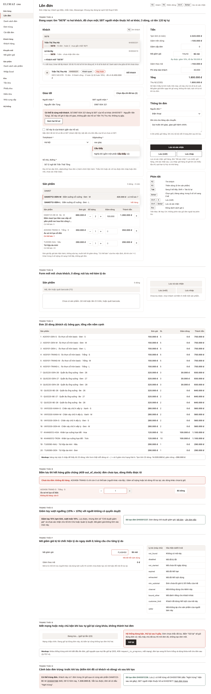
Thanh 10 nhãn (+ Tất cả) có số đếm; lọc nguồn, kênh, người phụ trách, ngày, nghi trùng; tìm mã, SĐT, tên; dấu "Nghi trùng"; tải thêm theo con trỏ; tự cập nhật.
Trạng thái: A nhãn Mới, đơn vừa đổi, tên công ty dài · B trống, tìm không ra · C nhãn vận chuyển trước M3, mất kết nối báo hiệu. Ca kiểm: DH09.
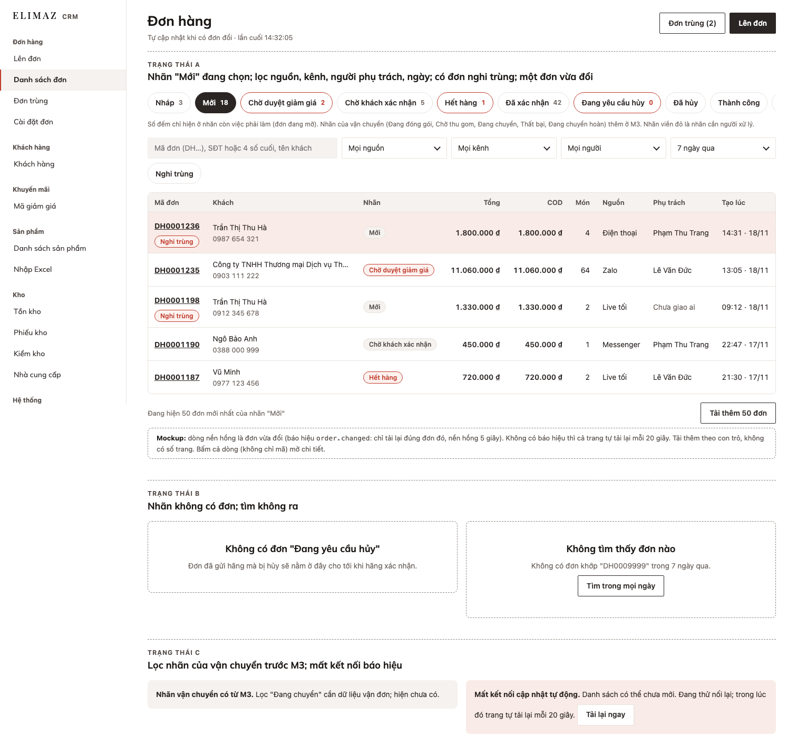
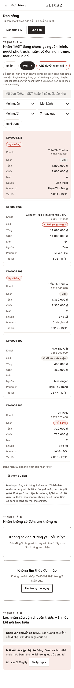
Dòng, tổng, khách (chỉ số, tỷ lệ hoàn), nhãn, nút theo EditScope kèm lý do, lịch sử thao tác, ghi chú nội bộ, phiếu trả; hộp thoại hủy, trả/đổi, nhận hàng trả; báo đơn đã thay đổi.
Trạng thái: A chờ duyệt giảm giá (người xem có quyền duyệt) · B thành công có phiếu trả + ma trận nút theo nhãn · C hủy (chưa/đã gửi hãng) · D trả/đổi (quá 7 ngày) · E nhận hàng trả · F version_conflict. Ca kiểm: DH06, DH16, TD01.
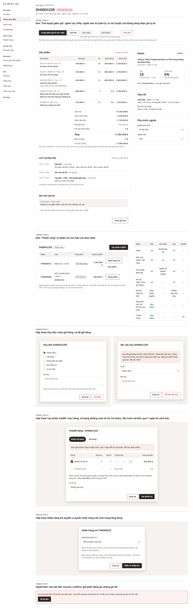
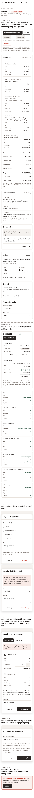
Từng cặp cạnh nhau, sản phẩm chung tô nền, "Không trùng", "Hủy đơn này".
Trạng thái: A 2 cặp (cùng khách; chỉ cùng SĐT người nhận) · B xác nhận hủy, thông báo không trùng · C trống. Ca kiểm: DH09.
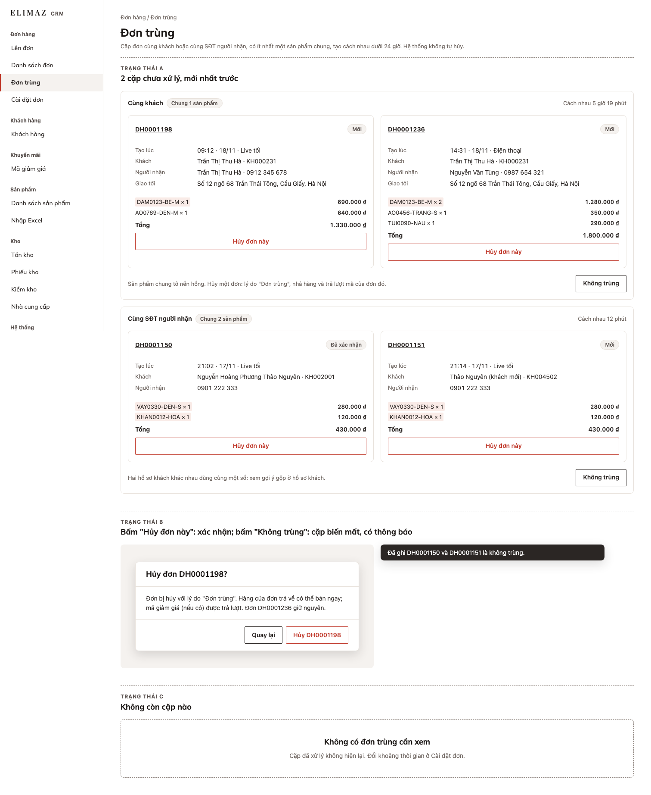
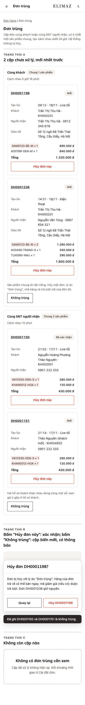
Danh sách, tìm theo đuôi SĐT/tên không dấu/mã, lọc nhãn, nhập Excel (tải mẫu, tải tệp, kết quả theo dòng), quản lý nhãn và quy tắc nhãn.
Trạng thái: A danh sách (tên dài, chưa có SĐT, đã gộp) · B tìm "5678", gõ 3 số · C trống · D nhập Excel · E nhãn và quy tắc nhãn. Ca kiểm: DH02.
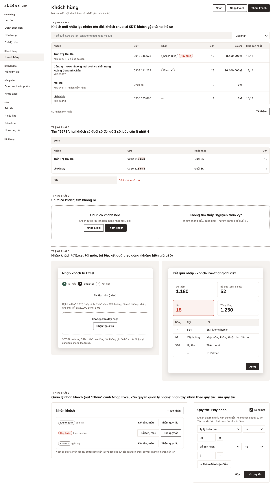
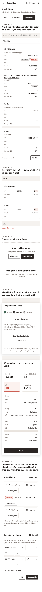
Hồ sơ theo nhóm đã gộp: danh tính, địa chỉ, nhãn tay và theo quy tắc, chỉ số, dòng thời gian, ghi chú, gợi ý gộp.
Trạng thái: A khách gộp 2 hồ sơ · B khách tiềm năng chưa SĐT, version_conflict. Ca kiểm: DH13, DH14.
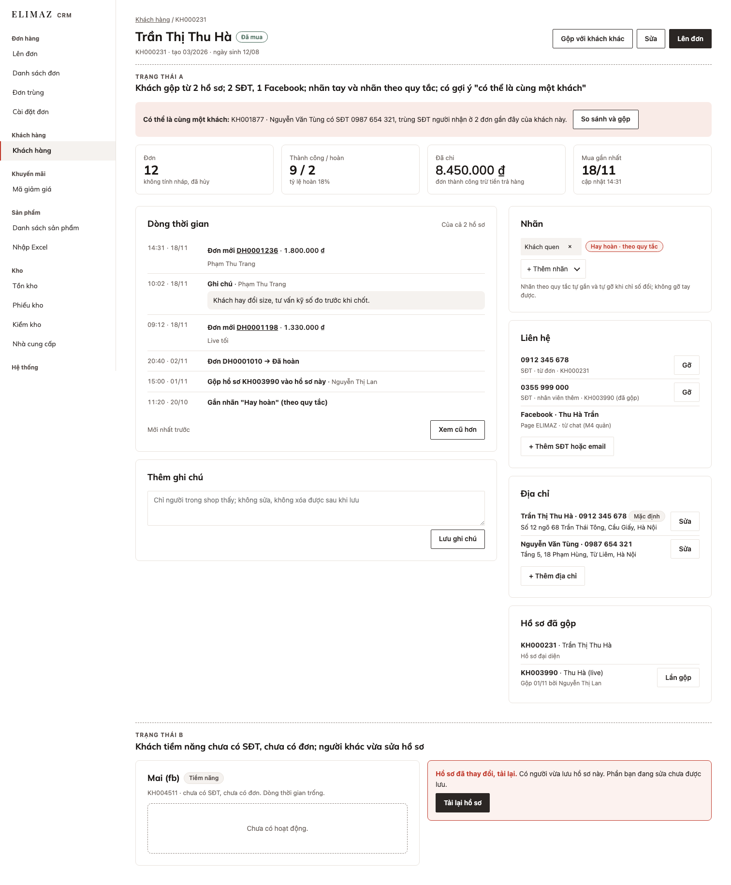
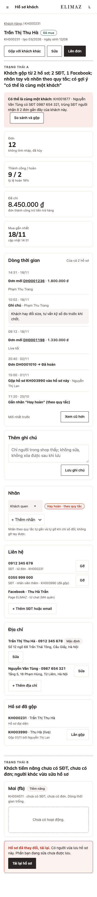
Hai hồ sơ cạnh nhau, chọn hồ sơ giữ lại, xác nhận lần hai; danh sách lần gộp có Hoàn tác và lý do khi không hoàn tác được.
Trạng thái: A so sánh, chọn · B xác nhận · C lần gộp: hoàn tác được, merge_not_latest, quá 30 ngày. Ca kiểm: DH13, DH14.
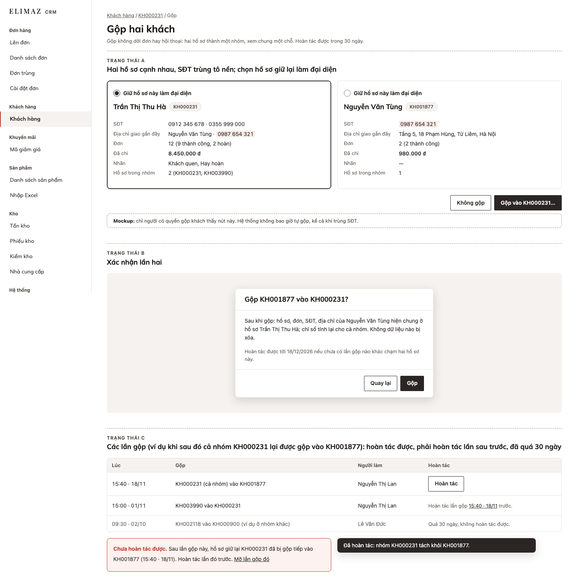
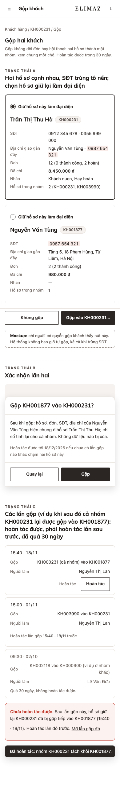
Danh sách, tạo mã, tạo đợt mã, chi tiết (lượt đã dùng, đơn đã dùng), tắt mã; trường khóa sau khi đã dùng.
Trạng thái: A danh sách (đang chạy, hết lượt, hết hạn, tắt, thuộc đợt) · B tạo mã, mã trùng · C đợt 500 mã đang sinh · D chi tiết, trường khóa, tổng lượt dưới số đã dùng · E tắt mã. Ca kiểm: KM01.
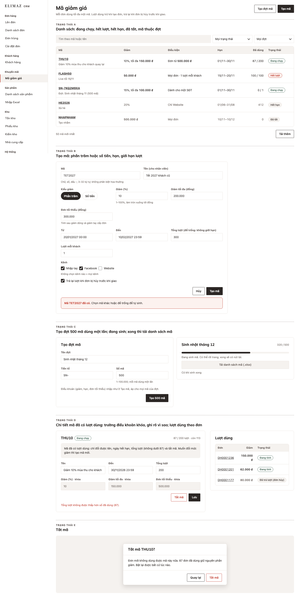
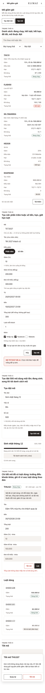
Bốn cài đặt có giải thích, giới hạn, người sửa gần nhất; nguồn đơn thêm, đổi tên, sắp xếp, tắt.
Trạng thái: A bốn cài đặt · B ngoài giới hạn, version_conflict · C nguồn đơn. Ca kiểm: DH09, DH16.
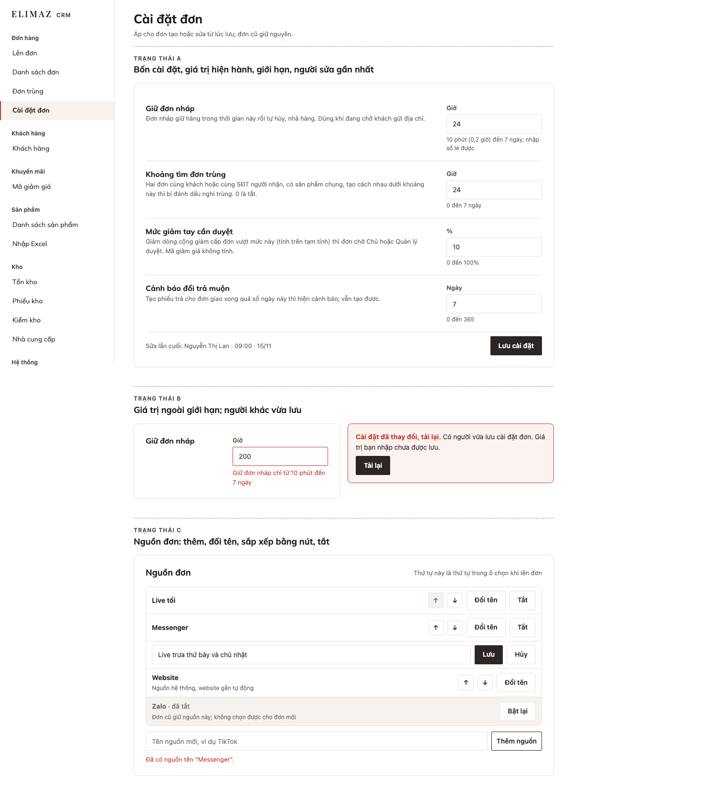
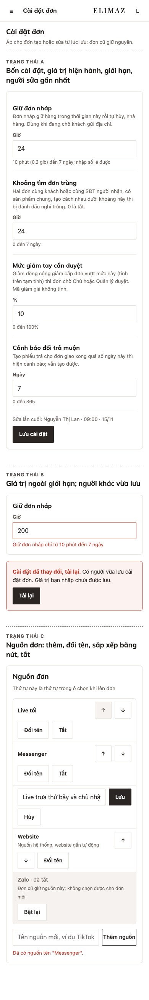
| Ca | Nội dung (spec 11) | Vẽ ở |
|---|---|---|
| DH01 | Lên đơn nhanh: khách, sản phẩm, giảm giá dòng, phí ship | Lên đơn A, C |
| DH02 | Tìm khách bằng vài số cuối SĐT hoặc tên không dấu | Lên đơn A; Khách hàng B |
| DH04 | Đơn nhập tay cho khách gọi điện hoặc nhắn Zalo, nguồn ghi đúng | Lên đơn A (nguồn đơn); Cài đặt đơn C |
| DH06 | Lịch sử thao tác: ai làm, lúc nào, đổi gì | Chi tiết đơn A |
| DH09 | Cùng SĐT, cùng sản phẩm trong vài giờ: nghi trùng, không tự hủy | Lên đơn H; Danh sách đơn A; Đơn trùng A–C; Cài đặt đơn A |
| DH13 | SĐT trùng hồ sơ khác: gợi ý "có thể là cùng một khách"; chỉ người có quyền mới gộp | Lên đơn A; Hồ sơ khách A; Gộp khách A, B |
| DH14 | Gộp nhầm: hoàn tác trong 30 ngày | Gộp khách C |
| DH16 | Giảm quá mức được phép: chờ người có quyền duyệt | Lên đơn E; Chi tiết đơn A; Cài đặt đơn A |
| TD01 | Hủy đơn chưa gửi hãng: hàng về có thể bán ngay | Chi tiết đơn C |
| KM01 | Mã có hạn và giới hạn lượt; hết lượt thì từ chối | Mã giảm giá A–D; Lên đơn F |
| # | Màn | Hành vi đề xuất | Chủ shop OK |
|---|---|---|---|
| HV01 | Khung | Menu thêm ba nhóm đứng đầu: Đơn hàng (Lên đơn, Danh sách đơn, Đơn trùng, Cài đặt đơn), Khách hàng, Khuyến mãi; sau đó các nhóm của M1. Hiện tại: Nhanh: menu Đơn hàng, Khách hàng riêng. | chưa |
| HV02 | Lên đơn | Lên đơn là trang riêng /don/moi (không phải hộp thoại). Tạo xong form trống để lên đơn tiếp, có liên kết mở đơn vừa tạo. Hiện tại: Nhanh có màn tạo đơn riêng; chưa khảo sát chi tiết. | chưa |
| HV03 | Lên đơn | Phím tắt: F2 tìm khách, F3 thêm dòng, Ctrl/⌘+S lưu (mới), Ctrl/⌘+Enter lưu và xác nhận, Esc đóng gợi ý, ↑ ↓ Enter chọn gợi ý. Enter trong ô số chỉ sang ô kế, không gửi đơn. Hiện tại: Chưa khảo sát. | chưa |
| HV04 | Lên đơn | Nút nổi bật (mặc định) là "Lưu và xác nhận"; hai nút phụ "Lưu (mới)", "Lưu nháp". Nút mờ kèm lý do khi chưa có khách hoặc dòng. Hiện tại: Chưa khảo sát. | chưa |
| HV05 | Lên đơn | Tìm khách: đủ số thì tìm đúng số; 4–9 số là đuôi số; dưới 4 số báo "Gõ ít nhất 4 số cuối". Gợi ý che giữa SĐT tới khi chọn khách. Hiện tại: Nhanh tìm theo SĐT; cách khớp đuôi chưa khảo sát. | chưa |
| HV06 | Lên đơn | Cảnh báo "Có thể là cùng một khách" đặt ngay dưới ô SĐT người nhận, có nút "Xem hai hồ sơ"; không bao giờ tự gộp. Hiện tại: — | chưa |
| HV07 | Lên đơn | Ô "Số này là của khách": tắt sẵn khi hồ sơ đã có SĐT (khách đặt hộ); bật sẵn cho đơn đầu của hồ sơ chưa có SĐT. Hiện tại: — | chưa |
| HV08 | Lên đơn | Đơn giá lấy giá bán hiện hành, không sửa tay; bớt tiền chỉ bằng giảm dòng hoặc giảm cấp đơn (Q23). Hiện tại: Chưa khảo sát Nhanh có cho sửa đơn giá không. | chưa |
| HV09 | Lên đơn | Giảm tay (dòng + cấp đơn) vượt 10% tạm tính: hiện cảnh báo trước khi lưu; lưu xong đơn "Chờ duyệt giảm giá" (Q3). Mã giảm giá không tính. Hiện tại: Q08 còn mở trên Nhanh. | chưa |
| HV10 | Lên đơn | Mã giảm giá kiểm ngay khi gõ xong (không trừ lượt), lý do từ chối bằng chữ ngay dưới ô; mỗi đơn tối đa một mã (Q27). Hiện tại: — | chưa |
| HV11 | Lên đơn | Đơn nháp giữ hàng 24 giờ rồi tự hủy và nhả hàng (Q8). Hiện tại: — | chưa |
| HV12 | Lên đơn | Mất mạng hoặc máy chủ bận: nút "Đang lưu… (gửi lại lần n/3)" khóa; hết lượt thì "Hệ thống đang bận, thử lại sau ít giây" và nút "Gửi lại" gửi đúng đơn cũ. Hiện tại: — | chưa |
| HV13 | Lên đơn | Cảnh báo đơn trùng hiện trước khi lưu (không chặn) và nhắc lại sau khi tạo. Hiện tại: — | chưa |
| HV14 | Danh sách đơn | Thanh nhãn trên cùng; điện thoại cuộn ngang. Số đếm chỉ ở nhãn đang mở; nhãn cần người xử lý (Chờ duyệt, Hết hàng, Đang yêu cầu hủy) viền đỏ. Hiện tại: Nhanh có thanh trạng thái đơn có số. | chưa |
| HV15 | Danh sách đơn | Tự cập nhật: đơn vừa đổi tô nền hồng 5 giây; không có báo hiệu thì tải lại mỗi 20 giây. "Tải thêm 50 đơn" thay cho số trang. Hiện tại: Chưa khảo sát. | chưa |
| HV16 | Chi tiết đơn | Nút không áp dụng cho trạng thái đơn thì ẩn (theo ma trận ở trạng thái B); nút áp dụng nhưng đang bị chặn (chờ duyệt, thiếu địa chỉ) hiện mờ kèm lý do bằng chữ; "Nhận hàng trả" ẩn khi thiếu quyền. Hiện tại: — | chưa |
| HV17 | Chi tiết đơn | Người có quyền duyệt bấm một nút "Duyệt giảm giá và xác nhận" (đơn Mới); đơn Nháp chỉ bỏ lý do chờ duyệt. Hiện tại: — | chưa |
| HV18 | Chi tiết đơn | Hủy đơn là hộp thoại: 5 lý do + ghi chú. Đơn đã gửi hãng thành "Đang yêu cầu hủy", hàng chưa về kho tới khi hãng xác nhận. Hiện tại: Chưa khảo sát. | chưa |
| HV19 | Chi tiết đơn | Trả/đổi là hộp thoại: chỉ đơn Thành công; không cho chọn quá số còn trả được; quá 7 ngày chỉ cảnh báo, không chặn (Q26); tạo phiếu không đổi tồn. Hiện tại: Chính sách đổi trả Q07 chưa chốt. | chưa |
| HV20 | Chi tiết đơn | Nhận hàng trả: chọn tình trạng từng món (bán lại được, hỏng, thiếu); bấm nhận là nhập kho ngay. Hiện tại: — | chưa |
| HV21 | Chi tiết đơn | Lịch sử thao tác chỉ ghi tên trường đã đổi ("Địa chỉ giao: đã đổi"), không ghi giá trị cũ. Hiện tại: Nhanh có lịch sử đơn; mức chi tiết chưa khảo sát. | chưa |
| HV22 | Chi tiết đơn | Ghi chú nội bộ chỉ thêm, không sửa, không xóa; không bao giờ gửi hãng (ghi chú cho hãng là ô riêng ở form đơn). Hiện tại: — | chưa |
| HV23 | Chi tiết đơn | Sửa đơn mở lại form Lên đơn điền sẵn (cùng phím tắt, cùng kiểm); trường bị khóa theo trạng thái hiện mờ kèm lý do. Hiện tại: — | chưa |
| HV24 | Nhiều màn | Hai người cùng sửa: người lưu sau nhận "… đã thay đổi, tải lại", phần đang gõ vẫn giữ, không ghi đè. Hiện tại: — | chưa |
| HV25 | Đơn trùng | Trang riêng: hai đơn cạnh nhau, sản phẩm chung tô nền. "Hủy đơn này" cần xác nhận (lý do Đơn trùng); "Không trùng" không cần xác nhận, có thông báo. Hiện tại: Nhanh: chưa khảo sát. | chưa |
| HV26 | Khách hàng | Mỗi dòng là một khách (các hồ sơ đã gộp là một dòng); tìm cùng luật như ô tìm khách ở Lên đơn. Hiện tại: — | chưa |
| HV27 | Khách hàng | Nhập Excel là hộp thoại ba bước; SĐT đã có thì bỏ qua dòng, không ghi đè; kết quả chỉ ghi dòng, cột, lỗi. Hiện tại: Nhập khách trên Nhanh: chưa rõ có dùng. | chưa |
| HV28 | Hồ sơ khách | Nhãn theo quy tắc ghi "theo quy tắc", không có nút gỡ; nhãn tay có nút ×. Hiện tại: — | chưa |
| HV29 | Gộp khách | Gộp là trang riêng: chọn hồ sơ đại diện rồi xác nhận lần hai. Chỉ người có quyền gộp thấy nút. Hiện tại: Nhanh: chưa khảo sát. | chưa |
| HV30 | Gộp khách | Hoàn tác chỉ lần gộp gần nhất chạm các hồ sơ đó và trong 30 ngày (Q14); dòng không hoàn tác được ghi lý do và liên kết tới lần phải hoàn tác trước. Hiện tại: — | chưa |
| HV31 | Mã giảm giá | Mã đã có lượt dùng: điều khoản khóa (ghi "khóa"), chỉ sửa tên, ngày hết hạn, tổng lượt (không dưới số đã dùng), tắt. Hiện tại: — | chưa |
| HV32 | Mã giảm giá | Tắt mã cần xác nhận; bật lại được. Hiện tại: — | chưa |
| HV33 | Mã giảm giá | Đơn hủy trước khi giao trả lại lượt mã; trả hàng sau giao không trả lượt; cờ trên từng mã, mặc định bật (Q2). Hiện tại: KM03 còn mở. | chưa |
| HV34 | Mã giảm giá | Đợt mã sinh nền, có thanh tiến độ, xong mới có nút tải danh sách mã. Hiện tại: — | chưa |
| HV35 | Khách hàng | Quản lý nhãn ở hộp riêng (nút "Nhãn"): tạo, đổi tên, màu; quy tắc là các điều kiện nối bằng VÀ trên chỉ số khách, bật/tắt; quy tắc tự gắn và tự gỡ, không đụng nhãn gắn tay. Hiện tại: Nhanh có nhãn khách; nhãn tự động chưa khảo sát. | chưa |
| HV36 | Nhiều màn | Nút ghi cần quyền riêng (Hủy/Không trùng ở Đơn trùng, Tạo/Sửa mã, Lưu cài đặt và nguồn đơn, Nhập Excel, Nhãn) không hiện với người thiếu quyền; trang vẫn xem được nếu có quyền đọc. Hiện tại: — | chưa |
| HV37 | Cài đặt đơn | Nhập theo giờ, %, ngày (máy chủ lưu phút và phần vạn); ngoài giới hạn báo ngay dưới ô. Hiện tại: — | chưa |
| HV38 | Cài đặt đơn | Nguồn đơn không xóa, chỉ tắt (đơn cũ giữ nguồn); sắp xếp bằng nút ↑ ↓; nguồn hệ thống (Website) không tắt được. Hiện tại: Nhanh có danh sách nguồn đơn. | chưa |
Điều phối viên ghi kết luận từng màn và từng dòng hành vi ở README.md, kèm ngày và người chốt.